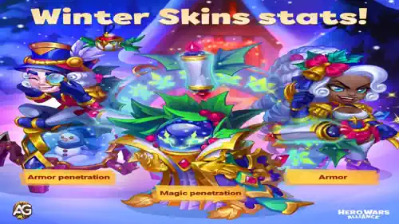

O inverno chegou ao Hero Wars, trazendo um lote empolgante de Skins de Inverno para Fólio, Isaac e Oya. Cada skin oferece bônus exclusivos de atributos que podem elevar seu desempenho, mas escolher as skins certas e priorizar os aprimoramentos é fundamental.
Seja você um iniciante ou um veterano, este guia aborda avaliações de skins, estratégias para heróis e dicas para a Loja de Inverno, ajudando você a aproveitar ao máximo o evento.
No Hero Wars Mobile, dominar as estratégias de contra-ataque para cada herói pode lhe dar uma vantagem decisiva na batalha. Abaixo está um guia detalhado sobre como derrotar cada herói e quais contra-ataques são mais eficazes. Vamos analisar mais de perto os heróis específicos e suas fraquezas.

Novas Skins de Inverno Folio Isaac Oya Hero Wars Alliance, um jogo desenvolvido pela Nexters.
Visão Geral das Skins de Inverno
Skin de Inverno da Oya: Aumento de Armadura
A Skin de Inverno da Oya oferece um aumento de Armadura, tornando-a mais resistente contra dano físico. No entanto, desbloqueá-la exige a conclusão de tarefas relacionadas a eventos, o que pode ser demorado para jogadores menos dedicados.
Vantagens da Skin de Inverno da Oya:
Aumenta a durabilidade, especialmente em combates contra inimigos com alto dano físico.
Complementa suas estatísticas de tanque, mesmo não sendo sua função principal.
Prioridades de Estatísticas da Oya:
Força: Aumenta o Ataque Físico e a Vida, essenciais para melhorar seu desempenho geral.
Ataque Físico: Amplia seu dano.
Vida: Melhora sua sobrevivência como heroína da linha de frente.
Armadura (Skin de Inverno): Útil, mas com prioridade menor em relação à Força e Ataque Físico.
Embora a Skin de Inverno agregue valor, a Skin de Força da Oya continua sendo a principal prioridade devido ao aumento duplo de ataque e vida.
Skin de Inverno do Isaac: Perfuração de Armadura
A Skin de Inverno do Isaac introduz Perfuração de Armadura, ajudando-o a causar mais dano a inimigos com alta armadura. No entanto, como Isaac é principalmente um herói de suporte, essa skin impacta apenas sua habilidade suprema, limitando sua utilidade geral.
Vantagens da Skin de Inverno do Isaac:
Adiciona capacidade ofensiva para configurações específicas de dano físico.
Um design visualmente impressionante que adiciona um toque festivo.
Prioridades de Estatísticas do Isaac:
Agilidade: Aumenta o Ataque Físico e a sobrevivência.
Ataque Físico: Suporta suas habilidades, especialmente a Suprema.
Armadura: Melhora sua resistência contra dano físico.
Vida: Aumenta sua sobrevivência.
Perfuração de Armadura (Skin de Inverno): Um benefício de nicho, ideal para configurações híbridas.
Chance de Acerto Crítico: Melhora a Chance e o Dano Crítico.
Para a maioria dos jogadores, o valor principal do Isaac reside em suas habilidades de suporte, tornando sua Skin de Inverno uma prioridade menor em comparação com outras que melhoram sua sobrevivência ou dano principal.
Super Skin do Fólio: Perfuração Mágica
Fólio rouba a cena neste inverno com sua Super Skin, que aumenta significativamente a Perfuração Mágica, dobrando o ganho de estatísticas em comparação com skins padrão. Isso a torna um ativo poderoso para maximizar o potencial de Fólio em composições de equipe baseadas em magia.
Vantagens da Super Skin do Fólio:
Transformadora para o dano de Fólio, especialmente contra equipes com alta defesa mágica.
Sinergiza com seu conjunto de habilidades, particularmente sua Suprema e os buffs aliados para heróis misteriosos.
Prioridades de Estatísticas do Fólio:
Perfuração Mágica (Super Skin): Essencial para otimizar seu dano.
Inteligência: Aumenta seu ataque mágico, melhora o desempenho geral e adiciona resistência contra equipes focadas em dano mágico.
A Super Skin do Fólio é um investimento de alta prioridade para jogadores que o utilizam como principal causador de dano mágico. No entanto, desbloqueá-la exige possuir primeiro sua Skin de Inverno padrão, tornando-a uma opção mais exclusiva.
Dicas para a Loja de Inverno
A Loja de Inverno é um tesouro de itens valiosos, mas saber o que priorizar é essencial. Aqui está uma análise para ajudar você a aproveitar ao máximo seus recursos:
Principais Prioridades:
Fragmentos de Alma de Heróis: Eles são cruciais para melhorar heróis até 5 ou 6 estrelas. Se você está fortalecendo o Fólio, concentre-se nos fragmentos de alma dele para maximizar seu potencial.
Artefatos e Moedas de Artefatos: Artefatos desempenham um papel vital na melhoria do desempenho dos heróis e devem sempre ser uma prioridade tanto para iniciantes quanto para veteranos.
Núcleos do Caos e Runas: Essenciais para aprimorar glifos e desbloquear o potencial dos heróis.
Prioridades Secundárias:
Fragmentos de Skins: Úteis para melhorar skins existentes, especialmente para heróis frequentemente usados.
Caixas de Artefatos: Uma boa opção reserva se você já aprimorou seus principais heróis.
O Que Evitar:
Equipamentos de Baixo Nível: Em vez de gastar a moeda do evento em equipamentos, concentre-se em obtê-los através das missões da campanha.
Excesso de Estoque de Recursos: Evite gastar todas as moedas do evento em itens que você não precisa imediatamente.
Por Que as Skins de Inverno São Importantes
As Skins de Inverno oferecem não apenas estilo visual, mas também melhorias funcionais que podem impactar o desempenho dos heróis. Para o Fólio, a Super Skin é transformadora, enquanto a Skin de Inverno da Oya pode melhorar sua capacidade de tankar. No entanto, o verdadeiro valor de cada skin depende da composição da sua equipe, estilo de jogo e disponibilidade de recursos.
Avaliando cuidadosamente os benefícios de cada skin e gerenciando seus recursos do evento com sabedoria, você pode aproveitar ao máximo o Evento de Inverno.
Perguntas Frequentes
Como posso desbloquear as novas Skins de Inverno no Hero Wars?
As Skins de Inverno podem atualmente ser adquiridas apenas durante o evento, fazendo uma compra, mas elas podem ficar disponíveis gratuitamente no futuro.
As Skins de Inverno são permanentes?
Sim, uma vez desbloqueadas, as Skins de Inverno são permanentes. No entanto, adquiri-las pode exigir um esforço significativo durante o período do evento.
A Super Skin do Fólio vale a pena?
Para jogadores que usam o Fólio como um causador de dano mágico principal, sua Super Skin é altamente valiosa devido ao grande aumento em Perfuração Mágica.
Devo priorizar a Skin de Inverno do Isaac?
A Skin de Inverno do Isaac não é uma prioridade para a maioria dos jogadores, pois sua função como herói de suporte se beneficia mais de estatísticas focadas em sobrevivência.
O que iniciantes devem comprar na Loja de Inverno?
Iniciantes devem focar nos fragmentos de alma de heróis, artefatos e runas para fortalecer sua equipe principal antes de investir em skins ou outros itens.
As Skins de Inverno são pay-to-win?
As skins só podem ser adquiridas comprando-as durante o evento, mas no futuro podem ser obtidas gratuitamente usando certificados de skins ou através do Baú Heroico.
Conclusão
O Evento de Inverno no Hero Wars traz oportunidades emocionantes para melhorar sua equipe com novas skins e recursos. Enquanto a Super Skin do Fólio se destaca como indispensável para equipes focadas em magia, as Skins de Inverno da Oya e do Isaac oferecem valores mais situacionais. Priorizando sabiamente na Loja de Inverno e focando nos heróis principais, você pode tornar este evento uma experiência recompensadora.
Fique atento para mais atualizações, estratégias e dicas enquanto exploramos tudo o que o Evento de Inverno tem a oferecer!
Sugestões de Vídeo:
Vídeo: Novas Skins de Inverno: Fólio Super Skin, Oya e Isaac + Dicas para Loja do evento Hero Wars Alliance
Você gostou do nosso Guia de Skin de Inverno da Oya, Isaac e Fólio para Hero Wars? Há algo que não entendeu ou gostaria de sugerir mudanças? Convidamos você a se juntar à nossa sessão de comentários na página do Alexandre Games Blog. Não hesite em expressar sua opinião, clarificar suas dúvidas e compartilhar sua sugestões. Clique no botão abaixo para começar:

 Tier List Hero Wars JvJ
Tier List Hero Wars JvJ  Times mais usados na Liga Royal HWA
Times mais usados na Liga Royal HWA